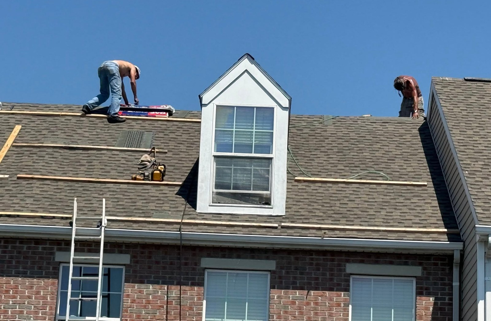
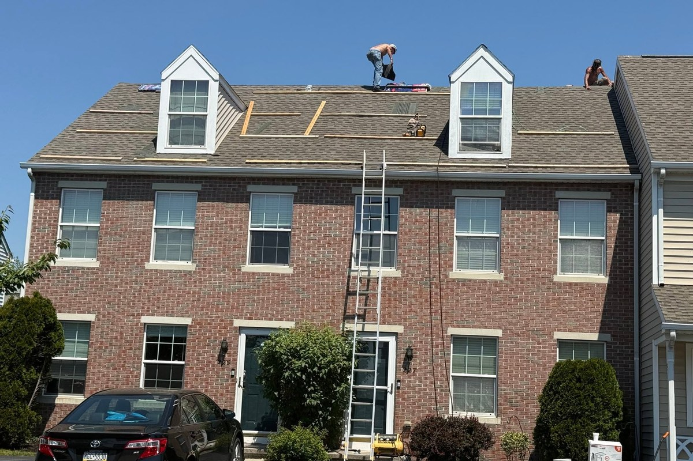
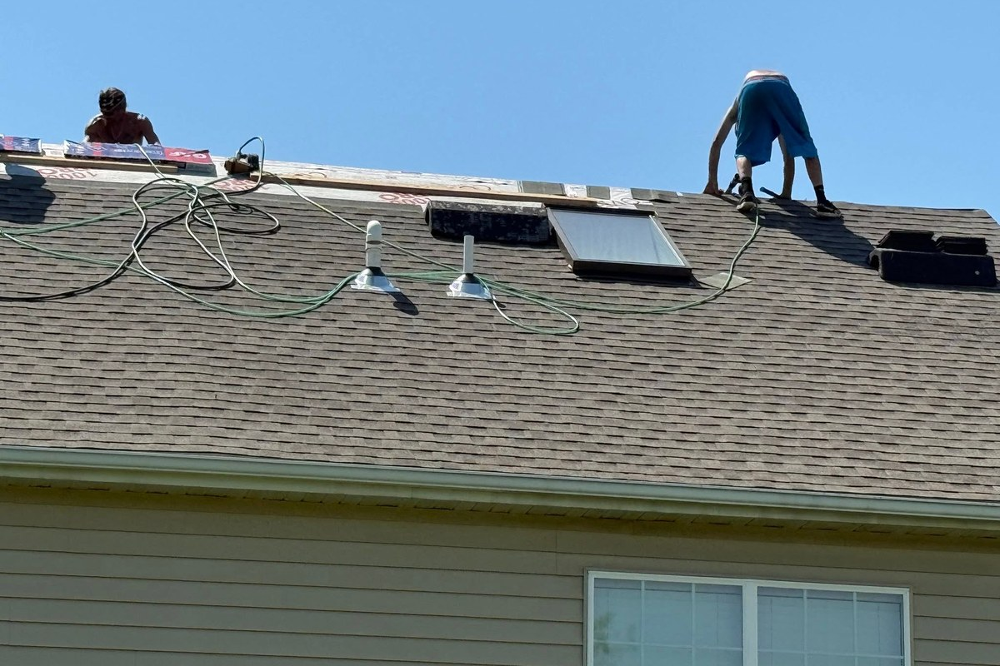
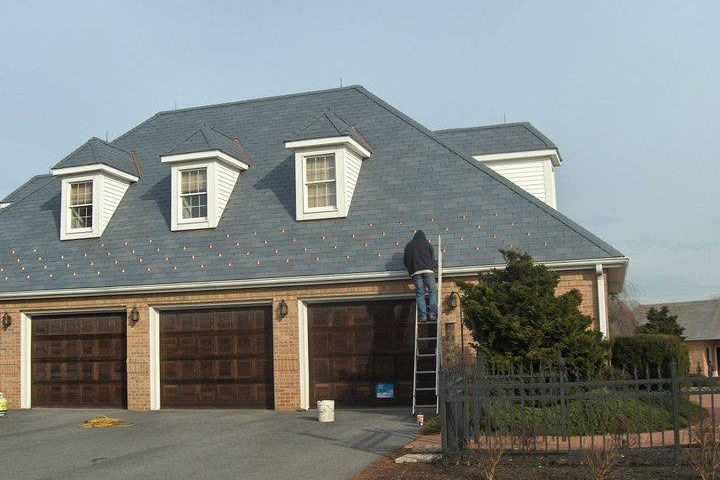
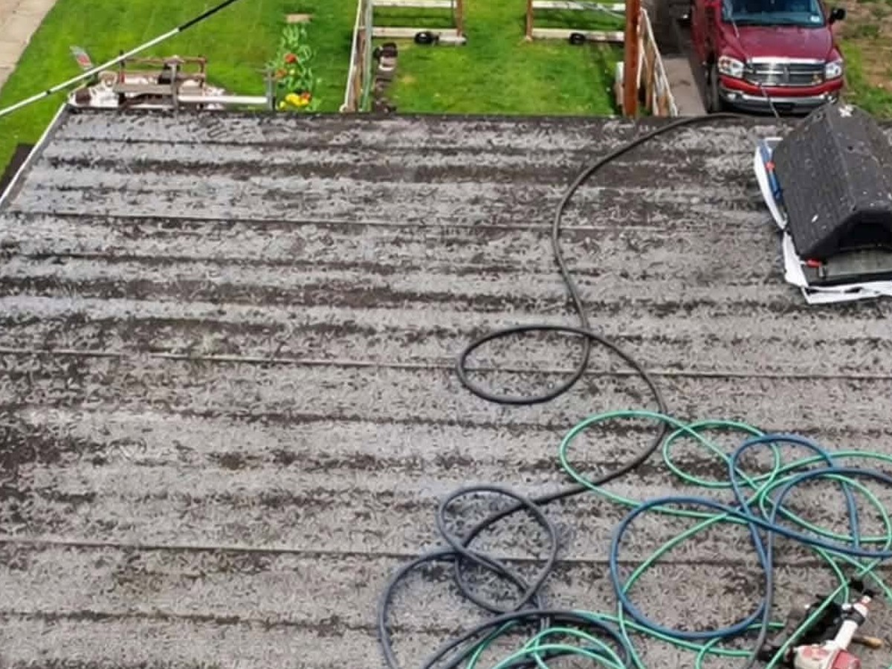
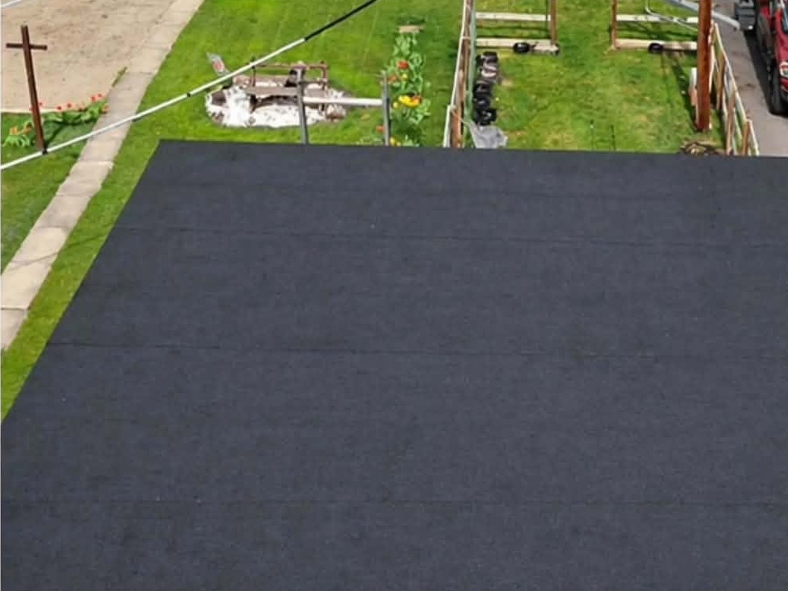

“We had the best experience with Encore roofing. Great communication and they did a job. Would highly recommend.”
Shelly Corbliss — GoogleOur work, our photos
Our work






Every photo is ours, from our own jobs. The black surface is underlayment — the stage before shingle.
4.9
“They did a great job on my roof last spring. Very friendly crew. Job was always clean and the roof looks great.”
Wendy Howell — Google“From the estimate stage to my finished new roof, Encore Roofing, LLC did an outstanding job. You can't beat the prices or the quality.”
Adam Briggs — Google“Very happy with the pricing and service. They showed up and got the job done in a timely manner. Would highly recommend!”
Michelle Carr — GoogleBefore you call
Questions we get
Do you repair roofs, or only replace them?
Both. We do repairs, full replacements, and storm and wind damage — and we hang gutters, siding and windows too.
What goes on a full replacement?
Architectural shingle over black underlayment — the black in our photos is the underlayment stage, not a finished roof. We also do ventilation and inspections.
Do you do commercial roofs?
No. Residential only — houses, not warehouses.
What areas do you cover?
We work out of Newport and cover Perry, Cumberland and Dauphin counties. Marysville, Carlisle, Camp Hill, Mechanicsburg, New Cumberland and Harrisburg are all regular runs.
Free estimate
Tell Scott about your roof
Leaking now, storm damage, or just old and tired — send it over — Scott answers 7am–10pm, every day, and the estimate costs nothing.
Rather talk? (717) 979-1975
7am–10pm, every day.
Encore Roofing, LLC · Newport, PA · Residential roofs, repairs, gutters, siding & windows · Perry, Cumberland & Dauphin counties